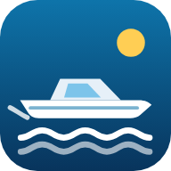

海ログ ヘルプ
English: Help in English
海ログは航行を支援するためのアプリです。航海の安全を保証するものではありません。 ご利用の前に、必ず最後の「免責事項」をお読みください。
1. はじめに（最初の準備）
① アプリを開く・ホーム画面に置く
スマホのブラウザ（iPhone は Safari、Android は Chrome）で https://oceanlog.doitmyself.net/ を開きます。 iPhone は共有ボタン →「ホーム画面に追加」、Android はメニュー →「ホーム画面に追加」（アプリをインストール）で、アプリと同じように使えます。
② 位置情報を許可する
現在地・航跡・コンパスのため、位置情報の利用を「許可」してください。iPhone のコンパスは、海図の「コンパスを使う」を押して許可します。
③ Google にログインする（おすすめ）
⚙ 設定 →「Google でログイン」。記録・出航地・ボート・書類の写真・設定が、あなたの Google ドライブの「OceanLog」フォルダーに保存されます。 機種変更や、スマホとタブレットの両方で使う時も、同じアカウントでログインすれば同じ内容が使えます。
④ 出航地とボートを登録する
下の 3・4 の手順で、よく使う出航地と、ボートの情報を登録しておくと、警告が役に立つようになります。
2. 画面の見方（下のメニュー）
| 航行 | 海図と現在地・航跡・記録した地点・海図記号・危険物を表示。出港 で航行モードを始めます。 |
|---|---|
| 波・気象 | 安全の目安（帰港の目安・波の危険・注意報警報）、風（Windy）、波、天気・気圧の変化、現在地。 |
| 日没・干満 | 日の出・日の入り、月齢・潮の呼び名（大潮など）、満潮・干潮の時刻と潮位のグラフ、危険潮位までの時間。 |
| 資格・船舶 | 船名・船の写真・大きさ・定員・馬力、船舶検査手帳と免許証の写真、次回の船検と免許の更新日。 |
| 設定 | ログイン、出航地、単位、海しる、地図、言語、配色、このヘルプ。 |
3. 出航地（マザーポート）を登録する
- ⚙ 設定 →「出航地（マザーポート）」→ ＋ 出航地を追加。
- 名前（例: 〇〇マリーナ）を入れ、地図を動かして、真ん中の ＋ を桟橋・スロープに合わせます。地名・住所で探すこともできます。
- 干潮危険潮位: これより潮が引くと、桟橋・スロープが使いにくくなる潮位（cm、潮位表と同じ基準）。
- Z0（平均水面の高さ）: 潮位表の基準から平均水面までの高さ（cm）。海上保安庁の潮汐表などで確かめられます。分からなければ 0 のままにします（その場合、潮位は平均水面からの高さの目安になります）。
複数登録でき、丸印で「いま使う出航地」を選びます。
4. ボート・免許を登録する（資格・船舶）
- 種類（小型船舶 / 水上オートバイ）、船名（例: 〇〇丸）、船の写真を登録できます。
- 船舶検査手帳・免許証は、📷 で撮影すると、四隅を合わせて真っすぐに直します。文字を読み取って、船名・長さ・幅・定員・馬力・次回の検査・免許の種類・有効期限を入力欄に入れます。読み取りは間違えることがあるので、必ず確かめて直してください。
- 最高速度から帰港にかかる時間の目安（最高速度の7割で計算）を、危険な波の高さから波の警告を出します。
- 船舶検査証書の航行区域の条件に「日出から日没まで」がある場合は、「航行時間の制限: 日出から日没までに限る」に印を付けます。日没の警告が出るようになります。
- 次回の船舶検査・免許の更新日の1か月前から、お知らせを出し、資格・船舶 に「！」が付きます。
5. 出港する・帰港する（航行モード）
- 海図の 出港 を押し、出航地を確かめて 出港する。これで航行モードになり、航跡の記録が始まります。
- 航行モードの間は、1分ごとに位置を点で記録し、画面が消えないようにします。
- 航行モードの間は、地図をスマホの向き（進行方向）に合わせて回します（磁北と真北のずれも直します）。右の ⬆ を押すと「北が上」に、N を押すと「進行方向が上」に戻ります。iPhone は「コンパスを使う」で許可が必要です。
- 出港した場所から 300m 以上離れた後、100m 以内に戻ってくると、自動で帰港（記録を終了）します。
- 別の港に帰った時などは、帰港（航行モード終了） を押して終えます。
海図の 地点を記録 で、釣り場・錨泊地・危険な場所・暗岩・洗岩などを記録できます。
法定備品チェックリスト
航行 の画面の下の ✅ 法定備品チェックリスト で、出港前に法定備品を1つずつ確かめられます。航行区域（平水・限定沿海・沿岸・沿海）と船の種類に合わせた一般的な目安を出します。正しくは船舶検査手帳・船舶検査証書の記載に従ってください。「項目を編集」で、ご自分の船に合わせて項目を外したり足したりできます。チェックは日が変わると外れます。
6. 「！」の警告の意味
| 波・気象 の「！」 | 気象庁の注意報・警報が出ている / 予報の波が、登録した危険な波の高さを超えそう / 気圧が急に下がっている。 |
|---|---|
| 日没・干満 の「！」 | 出航地の潮位が干潮危険潮位を下回っている、または2時間以内に下回る / 日没まで2時間を切った（「日出から日没まで」の船だけ）。 |
| 資格・船舶 の「！」 | 船舶検査・免許の更新が1か月以内、または期限切れ。 |
| 危険物 | 航行モード中に、記録した暗岩・洗岩や OpenSeaMap の危険物まで 500m 以内で注意、150m 以内で警告。 |
7. 海図の使い方
地図の種類
海図右上の 地図の種類 で、地理院地図・航空写真・OpenStreetMap・水深（GEBCO）を切り替え、海図記号（OpenSeaMap）を重ねられます。
オフライン用に保存
出港前に ⬇️ で、近辺の地図と海図記号を端末に保存できます。沖で電波がなくても、保存した範囲は表示できます。Wi-Fi のある場所での保存をおすすめします。
暗岩・洗岩など
自分で記録した暗岩・洗岩と、OpenSeaMap に登録された暗岩・洗岩・干出岩・沈船・障害物を、海図記号に近い形で表示します。日本は登録が少ないため、表示されていない岩もあります。
コンパス
左下の方位盤で、スマホの上端が向いている方角（磁方位、赤い三角）と、GPS の進行方向（COG、青い三角）を表示します。スマホのコンパスは、磁石や金属・エンジンの近くでずれます。
8. 海しる（海上保安庁）を使う
海上保安庁の「海しる」の情報を、海図に重ねられます（任意・無料）。使う人がそれぞれ、キー（サブスクリプションキー）を設定に入れます。
- 海しる API の開発者ポータルを開き、上のメニューの「利用規約」を読みます（使う人は規約に同意したものとみなされます）。
- すぐ試す: 「利用方法」のページに、だれでも使える「試用サブスクリプションキー」が載っています。1つをコピーします（予告なく止まったり変わったりすることがあります）。
- 自分のキー: 「利用方法」のページで案内している海上保安庁 海洋情報部の問い合わせフォームから、件名「海しるAPIサブスクリプションキー発行依頼」として、利用目的と使いたい項目を書いて申し込みます。
- ⚙ 設定 →「海しる（海上保安庁）」の「API キー」に貼り付けて保存します。
- 保存すると、等深線が海図に表示されます。「地図に重ねる項目」（または海図の「地図の種類」）で、等深線・灯台・定置漁業権（定置網の区域）を切り替えられます。ほかの項目は、「項目一覧」のページで API の URL を確かめて追加できます。
海しる API は新しい v3 に移行中です（v2 は 2027年12月末に終了予定）。キーはそのまま使えますが、項目の URL が変わることがあります。
キーは端末と、ログイン中はあなたの Google ドライブにも保存され、同じアカウントの別の端末でもそのまま使えます。キーはほかの人に教えないでください。
9. 記録の保存・別の端末で使う・書き出し
- 記録は、まず端末に保存し、ログイン中は Google ドライブの「OceanLog」フォルダーと自動で同期します。電波がない時も記録でき、つながった時に送ります。
- 同じ Google アカウントでログインした端末では、航跡・地点・出航地・ボート・書類の写真・設定（単位・地図・海しるのキー・言語・配色）が共通になります。
- 海図の下の 📒 記録一覧・書き出し から、航跡・地点を GPX・KML・CSV・GeoJSON で書き出せます（ほかの航海アプリや Google Earth で開けます）。
- データは、あなたの端末とあなたの Google ドライブだけに保存します。作成者のサーバーには送りません。
10. 困ったとき
- 現在地が出ない: 端末の位置情報がオンか、ブラウザに位置情報を許可しているか確かめます。屋内や船室では GPS が届きにくくなります。
- コンパスが動かない・ずれる: iPhone は「コンパスを使う」を押して許可します。端末を8の字に動かすと、ずれが直ることがあります。
- 天気・潮が出ない: 電波を確かめ、更新 を押します。沖では電波が届かないことがあります。
- ログインできない: ほかのアプリの中ではなく、Safari・Chrome で直接開いてください。
- 海しるが表示されない: キーと URL を確かめます。海しる側の都合で使えない場合もあります。
11. 免責事項
海ログ（OceanLog、以下「本アプリ」）をご利用になる前に、次の内容をお読みください。本アプリを利用した時点で、次の内容に同意したものとみなします。
- 航行支援のためのアプリです。本アプリは、ボート・水上オートバイの航行を補助する目的で作られています。航海の安全を保証するものではありません。
- 公式の情報の代わりにはなりません。本アプリの海図・水深・危険物・潮位・気象・波・日の出日没・警告などは、公開されている予報・データや端末での計算による目安であり、正確さ・完全さ・最新であることを保証しません。航海には、海上保安庁の海図・潮汐表・航行警報、気象庁の気象情報・注意報・警報など、公式の情報を必ずお使いください。
- 表示されない危険があります。暗岩・浅瀬・障害物・定置網・他の船などは、本アプリに表示されないことがあります。警告が出ていないことは、安全であることを意味しません。
- 端末・通信の制約があります。GPS・コンパスの誤差、電波の途切れ、電池切れ、端末の故障、アプリ・ブラウザの不具合、外部サービスの停止などにより、情報が表示されない・遅れる・誤ることがあります。本アプリだけに頼らないでください。
- 判断と責任は船長にあります。出航・航行・帰港の判断、見張り、法令（船舶職員及び小型船舶操縦者法・海上衝突予防法・港則法など）と船舶検査証書の条件を守ることは、船長（操縦者）の責任です。操船中にスマホを操作しないでください。
- 作成者は責任を負いません。本アプリの情報の誤り・欠落・遅れ、利用者による情報の読み違い・誤った解釈・入力の誤り、文字の読み取り（OCR）の誤り、記録やデータの消失、その他本アプリの利用または利用できなかったことにより生じた、事故・損害・損失について、作成者は一切の責任を負いません。
- 外部のサービス。本アプリは Open-Meteo・気象庁・国土地理院・OpenStreetMap・OpenSeaMap・GEBCO・Windy・海しる（海上保安庁）・Google などの外部サービスを利用しています。これらの内容は各提供者によるもので、作成者は保証しません。海しるの情報は、海上保安庁によって保証されたものではありません。
- 予告なく変更・停止することがあります。本アプリは無料で提供しており、内容の変更や、提供の停止をすることがあります。
OceanLog Help
日本語: 日本語のヘルプ
OceanLog is a navigation aid. It does not guarantee safe navigation. Please read the Disclaimer at the end before use.
1. Getting started
- Open https://oceanlog.doitmyself.net/ in Safari (iPhone) or Chrome (Android) and add it to your home screen.
- Allow location access. On iPhone, tap "Use compass" on the chart to allow the compass.
- Sign in with Google in Settings (recommended). Records, home ports, boat, document photos and settings are saved in the "OceanLog" folder of your Google Drive and shared with your other devices.
- Register your home ports and boat (sections 3 and 4) so the warnings work.
2. Screens (bottom menu)
| Navigate | Chart with Position, tracks, marks, seamarks and hazards. Depart starts underway mode. |
|---|---|
| Sea & weather | Safety summary, wind (Windy), waves, weather and pressure trend, position. |
| Sunset & tides | Sunrise/sunset, moon, high and low tides, time until the danger tide level. |
| Boat & license | Boat details and photo, inspection book and license photos, renewal dates. |
| Settings | Sign-in, home ports, units, MSIL, map, language, colors and this help. |
3. Home ports
Settings → Home ports → ＋ Add a home port. Move the map so the center ＋ is on your pier or slipway. Set the danger low-tide level (cm, chart datum) below which the pier or slipway is hard to use, and Z0 (height of mean sea level above chart datum, cm; leave 0 if unknown).
4. Boat & license
- Take photos of the inspection book and license with 📷. The corners are straightened and the text is read (OCR) to fill in the fields. OCR can be wrong — always check.
- Max speed is used to estimate return time (70% of max speed); danger wave height for wave warnings.
- Tick "Operating time limited to sunrise–sunset" if your inspection certificate limits navigation to sunrise–sunset; you will then get sunset warnings.
- You are notified from one month before inspection or license renewal.
5. Departing and returning (underway mode)
- Tap Depart to start underway mode. Your position is recorded as a dot every minute.
- In underway mode the map turns with the phone (heading up), corrected from magnetic to true north. Tap ⬆ for north up and N to go back. On iPhone, allow the compass with "Use compass".
- After moving more than 300 m away, coming back within 100 m of the departure point ends the voyage automatically. To end elsewhere, tap Return (end underway mode).
✅ Required equipment checklist at the bottom of Navigate lets you tick each required item before departure. It is a general guide by navigation area and boat type; your inspection book is authoritative. Use "Edit items" to match your boat. Ticks clear each day.
6. What the "！" marks mean
- Sea & weather: JMA advisories/warnings, waves forecast above your danger height, or a rapid pressure drop.
- Sunset & tides: the tide at your home port is (or within 2 hours will be) below the danger level, or sunset is within 2 hours (daylight-only boats).
- Boat & license: renewal within one month or overdue.
- Hazards: in underway mode, caution within 500 m and warning within 150 m of known rocks and hazards.
7. Chart
- Map type switches GSI maps, aerial photos, OpenStreetMap and GEBCO depth, and overlays OpenSeaMap seamarks.
- ⬇️ saves the nearby charts for offline use before departure.
- Rocks and hazards from your own marks and OpenSeaMap are shown. Coverage in Japan is sparse; not all rocks are shown.
- The compass shows the magnetic heading of the top of the phone (red) and GPS course over ground (blue). It is affected by magnets, metal and engines.
8. MSIL (Japan Coast Guard)
Optional and free. The MSIL API developer portal has no account sign-up. Read the terms (利用規約), then either copy one of the trial keys on the 利用方法 (How to use) page, or request your own key via the Japan Coast Guard Hydrographic Department inquiry form linked there (subject "海しるAPIサブスクリプションキー発行依頼"). Paste the key in Settings → MSIL, Depth contours turn on automatically; switch depth contours, lighthouses and fixed-net fishery areas under "Items to overlay" or "Map type" on the chart. Other items can be added with their MapServer URL from the item list. The API is moving to v3 and item URLs may change. The key is saved on the device and, when signed in, in your Google Drive. Do not share your key.
9. Saving, other devices, export
- Records are saved on the device and synced with your Google Drive when signed in (also after being offline).
- Devices signed in with the same account share tracks, marks, home ports, boat, document photos and settings.
- Export tracks and marks as GPX, KML, CSV or GeoJSON from 📒 Records & export below the chart.
- Data is stored only on your devices and in your Google Drive; nothing is sent to the author's servers.
10. Troubleshooting
- No position: check location settings and browser permission. GPS is weak indoors or in a cabin.
- Compass wrong: on iPhone tap "Use compass"; move the phone in a figure 8 to recalibrate.
- No weather or tide: check the signal and tap Refresh.
- Cannot sign in: open the page directly in Safari or Chrome, not inside another app.
11. Disclaimer
By using OceanLog ("the app") you agree to the following.
- Navigation aid only. The app is made to assist navigation of boats and personal watercraft. It does not guarantee safe navigation.
- Not a substitute for official information. Charts, depth, hazards, tides, weather, waves, sun times and warnings are estimates based on public forecasts, data and on-device calculation, and are not guaranteed to be accurate, complete or up to date. Always use official nautical charts, tide tables, navigational warnings and weather warnings.
- Hazards may not be shown. Rocks, shallows, obstacles, fishing nets and other vessels may not appear. No warning does not mean it is safe.
- Device and network limits. GPS and compass errors, loss of signal, battery, device failure, software bugs or outages of external services may cause information to be missing, late or wrong. Do not rely on the app alone.
- The skipper is responsible. Decisions to depart, navigate and return, keeping a lookout, and complying with laws and the conditions of your inspection certificate are the skipper's responsibility. Do not operate your phone while steering.
- No liability. The author accepts no liability for any accident, damage or loss arising from errors, omissions or delays in the information, misreading or misinterpretation by the user, input or OCR errors, loss of data, or the use of or inability to use the app.
- External services. Content from Open-Meteo, JMA, GSI, OpenStreetMap, OpenSeaMap, GEBCO, Windy, MSIL (Japan Coast Guard), Google and others belongs to their providers and is not guaranteed by the author. MSIL information is not guaranteed by the Japan Coast Guard.
- Changes. The app is provided free of charge and may be changed or discontinued without notice.